| 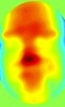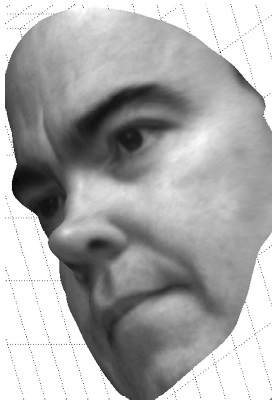 |
Fourier transform profilometry (FTP) for biometric
identification: End-to-end algorithm development for a 3-D face
imaging system to be deployed at security checkpoints and
uncontrolled crowd areas. From left-to-right the images show FTP
data (subject illuminated by sinusoidal-amplitude laser fringes),
the reconstructed 3-D surface (colormap indicates height), and a
rotated surface with photograph overlay (photograph captured
simultaneous with fringe data). |
| 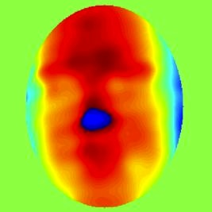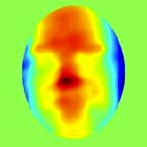 |
Phase unwrapping for FTP and DH: fast robust
methods to remove 2π discontinuities from 2-D phase profiles
modulo 2π. In 1-D this problem is straightforward, given
sufficient sampling of the signal; in 2-D it's deceptively hard.
In both FTP and 3-D DH, the surface profile is computed from the
phase of a complex image and must be unwrapped to form a smooth
depth map. Note the discontinuity at center in the image
on the left, which has been removed in the image on the right. |
| 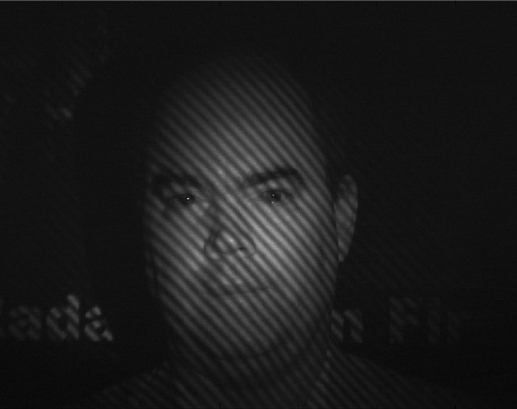 |
Automatic fringe-aware glint-removal: data
pre-processing to remove specular reflections from eyeballs,
glasses frames, and wet skin. Glints cause large spikes in the 3-D
reconstruction and degrade biometric ID performance. Inpainting
and filtering methods computationally eliminate the glint without
distorting the FTP fringes, and avoid a costly optical hardware
method. |
| 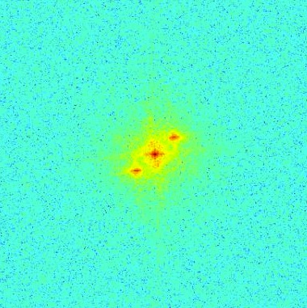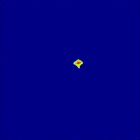 |
Automatic spectral region extraction for FTP:
algorithm development for automatic identification of the extent
of the signal modulation about the fundamental fringe frequency.
Care must be taken not to extract too large an area to avoid
introducing artifacts and noise into the reconstructed phase.
Extracting too little reduces the scale of surface feature which
can be reconstructed. |
| 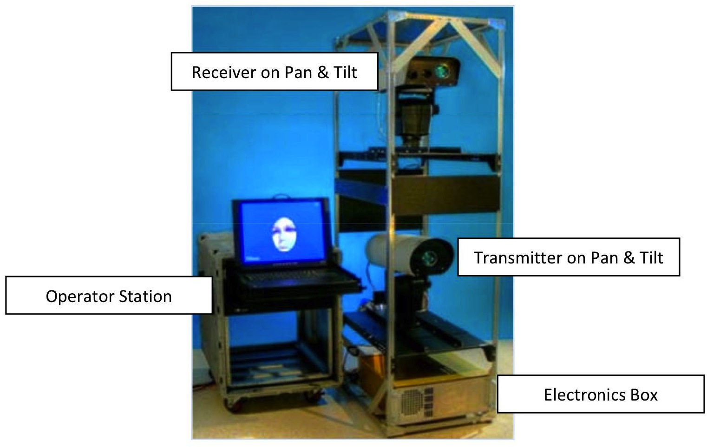 |
Protoype unit for demonstrations: algorithms were
implemented in C++ and achieved target run-time speeds with good
ID performace and unattended operation. Planned a GPGPU
implementation for video-rate update of 3-D imagery and biometric ID. |
| 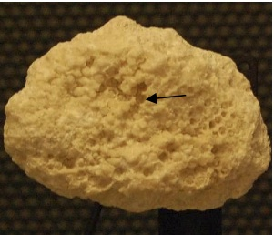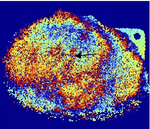 |
Proposed digital holographic 3-D mapping of coral
beds: laboratory experiment imaging real (dead) coral in a tank of
saltwater. Potential to use in airborne, boat, or submarine surveys
of coral reefs. Left, photograph of a piece of coral. Right, 3-D
surface representation (phase; color indicates depth, 2π-ambiguity not
resolved -- not "unwrapped"). |
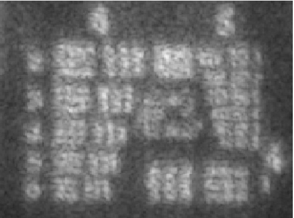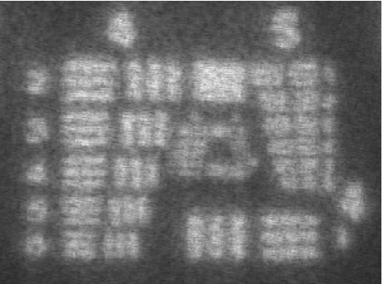 |
Multiaperture digital holography: coherent combination of
several identical DH imaging systems improves image resolution
without the cost (in both SWAP and $) of achieving that resolution
in a single system. The image on the left is from one aperture;
few groups of bars are resolvable. The image on the right is from
four co-phased apertures; many groups of bars are now resolvable.
See below for some details on coherently combining apertures. |
| 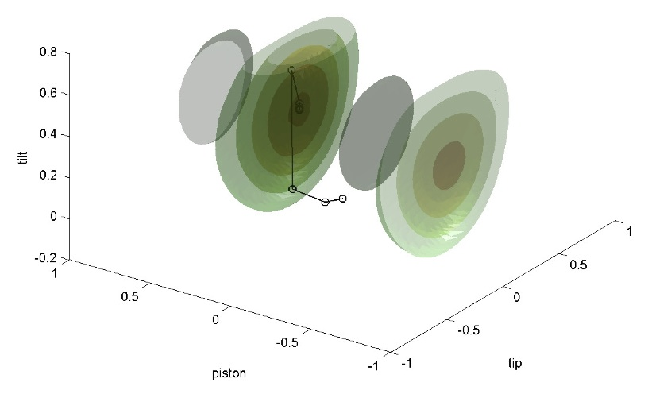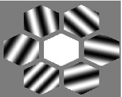 |
Aperture cophasing for multiaperture digital
holography: to coherently combine apertures, they need to be
aligned to within a fraction (1/12) of a wavelength
(near-infra-red is around 1 micron). While extremely challenging
using physical optics, phase corrections can easily be applied
computationally. The right-hand image shows six hexagonal
apertures co-phased to the center reference aperture. Only three
variables are needed: piston, tip, and tilt. The left-hand plot
shows iterations of Newton-Raphson optimization on isosurfaces of
the sharpness metric for one pair of apertures. When the sharpness
of an image formed by these apertures attains a maximum, the
apertures are co-phased. |
| 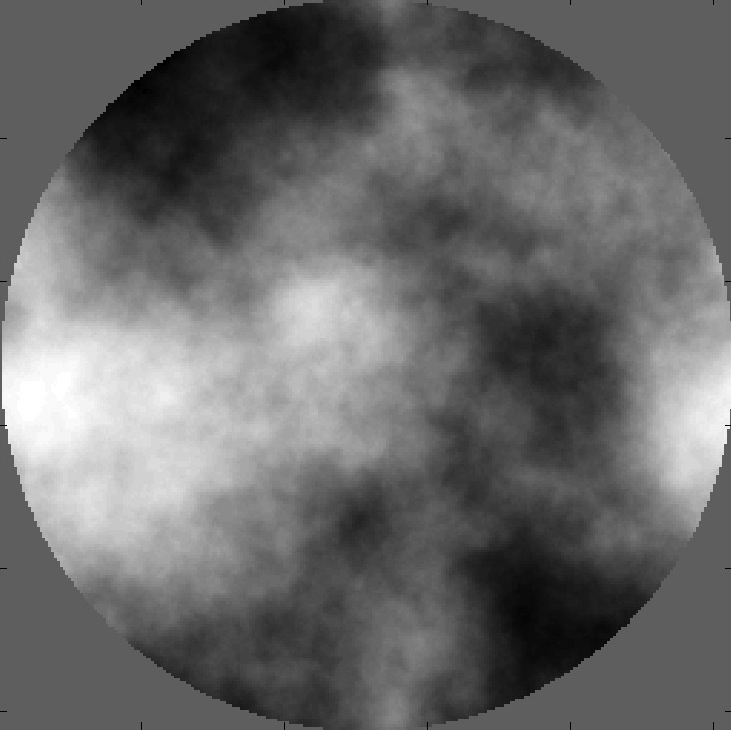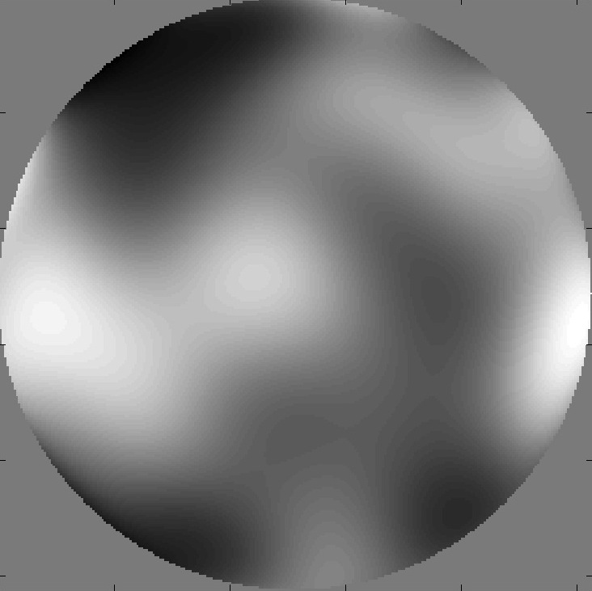 |
Accurate identification of atmospheric
turbulence distortion in simulated digital holography: the effect
of atmospheric turbulence on propagation of reflected laser light
is simulated by a phase screen (left). Sharpness maximization with
10-100 variables (number of Zernike polynomials) is used to
correct the resulting blur. The identified phase screen (right)
approaches the projection of the simulated aberration on the
Zernike basis. |
| 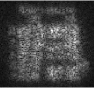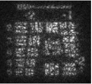 |
Removing atmospheric turbulence distortion in long-range
digital holographic imagery of small objects: fast methods for data.
Results of the above development are illustrated at left. The
left image is distorted by (real) atmosphere; the right image has
been restored using sharpness maximization in the Zernike
basis. Almost no detail is visible in the uncorrected image; separation
of the bars is discernable after restoration. Note also the presence
of speckle noise (blobs) as this is a single (un-averaged) image. |
| 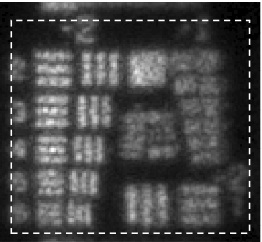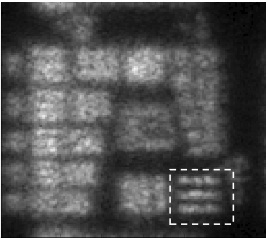 |
Correction of anisotropy in digital holography
through turbulent atmosphere: restoration over isoplanatic patches
and stitching. The assumption of a space-invariat
kernel (point-spread-function, PSF) fails when the severity of
the turbulence is large. Sharpness maximization over the whole
image performs poorly since it does not account for the variations
in the kernel. Once can independently apply sharpness maximization
over sub-regions of the image to obtain much better results. That
is, one breaks the large space-variant problem into multiple smaller
space-invariant problems and then stiches the results back
together. The left image shows restoration with a whole-image PSF; the
right image has been restored with a single PSF optimized for the
much smaller dashed box. |
| 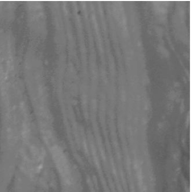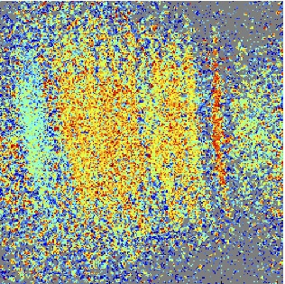 |
Proposed digital holographic surface mapping of
Europa (moon of Jupiter): laboratory experiments imaging wax
casts of features similar to the surface of Europa. Proposed to
include a 3-D mapper on a future planned NASA mission. Left,
photograph of wax cast showing flow feature. Right, 3-D surface
representation (phase; color indicates depth) of a portion of the wax
cast. |
| 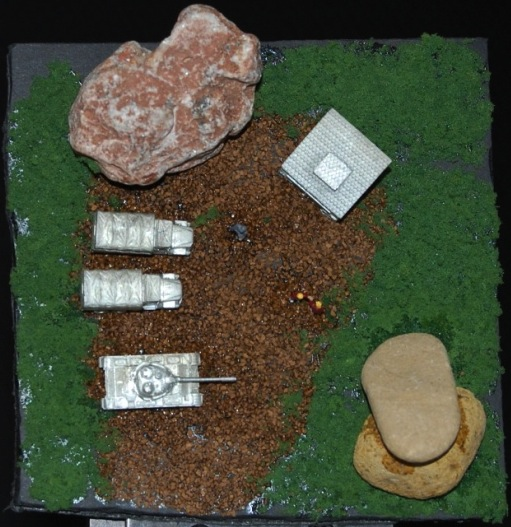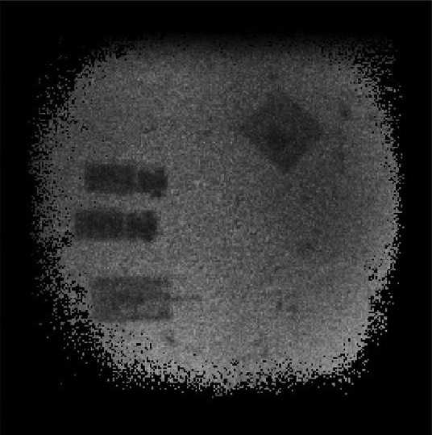 |
Polarimetric digital holography: adds information
to imagery to enable identification of man-made materials (vehicles
and buildings) from natural features (rocks, trees, grass). Project
with two high-school student interns -- won accolades at local and
regional science fairs. |
| 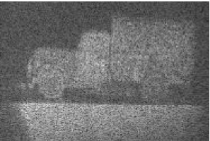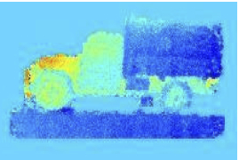 |
Two-wavelength digital holography for 3-D
imaging: developed algorithms for image formation and
reconstruction of 3-D surfaces. Data acquire from both laboratory
and field-demo systems. |
|
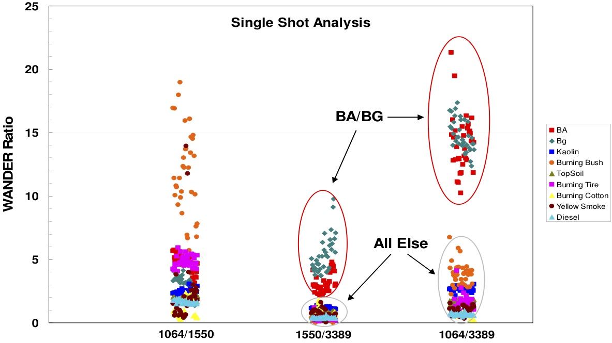 |
WANDER (wavelength normalized depolarization ratio): modeling
polarized laser backscatter for standoff detection of bio-aerosol
terror agents such as anthrax (b. anthracis and
b. globigii), plague, and viruses. In particular, WANDER can
distinguish anthrax from common background aerosols such as dust,
diesel smoke, and pollen. Computational modelling supported and
validated the theory behind laboratory and field-test results. |
| 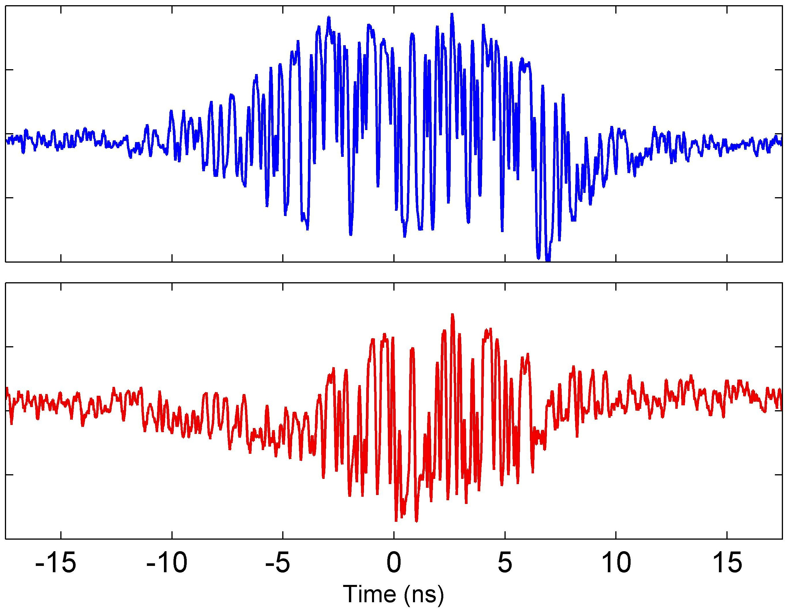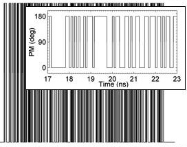 |
Optical frequency demultiplexing for
high-bandwidth heterodyne laser radar: modeled performance of a
Fabry-Perot filterbank for subdividing a wide spectral band into
narrower bands. |
| 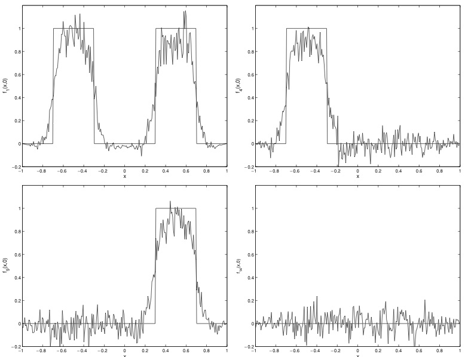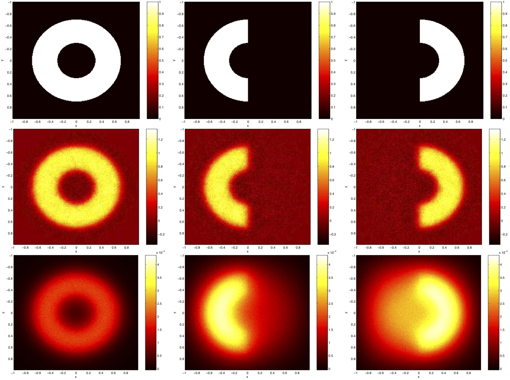 |
Nondestructive evaluation of spot-welds via an
inverse problem in thermal imaging: recover size and shape of
subsurface spot-welds in automotive sheet metal assembly from
thermal videos of the sheet's surface. A transducer vibrates the
sheets, generating a heat source at the weld. Simplified model of 3-D heat
conduction to a 2-D model and applied regularization methods to
recover the source. Traces at left show ideal source and
reconstruction. Images at left show ideal source (top row),
simulated data (bottom row), and reconstructed source (middle
row). Ph.D. thesis project arising from internship with General
Motors Corp. |
| 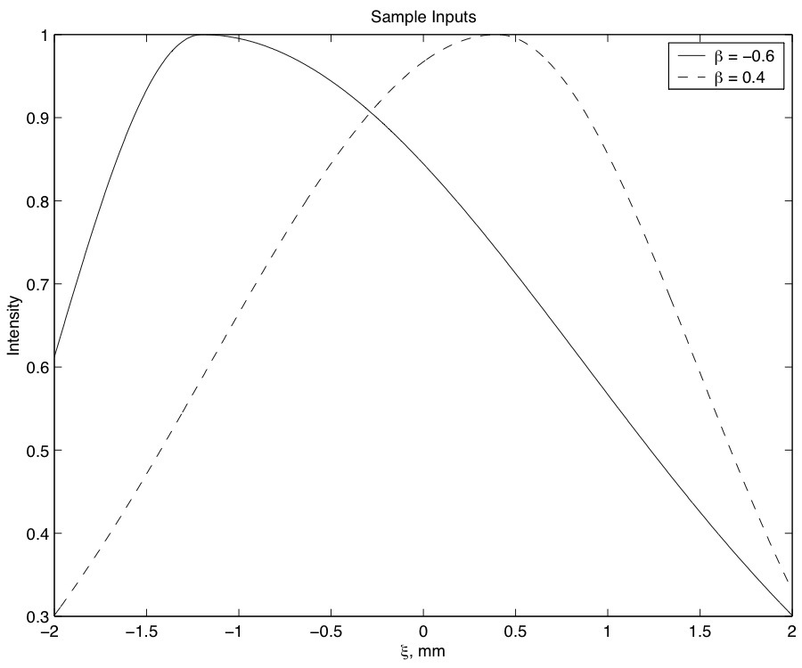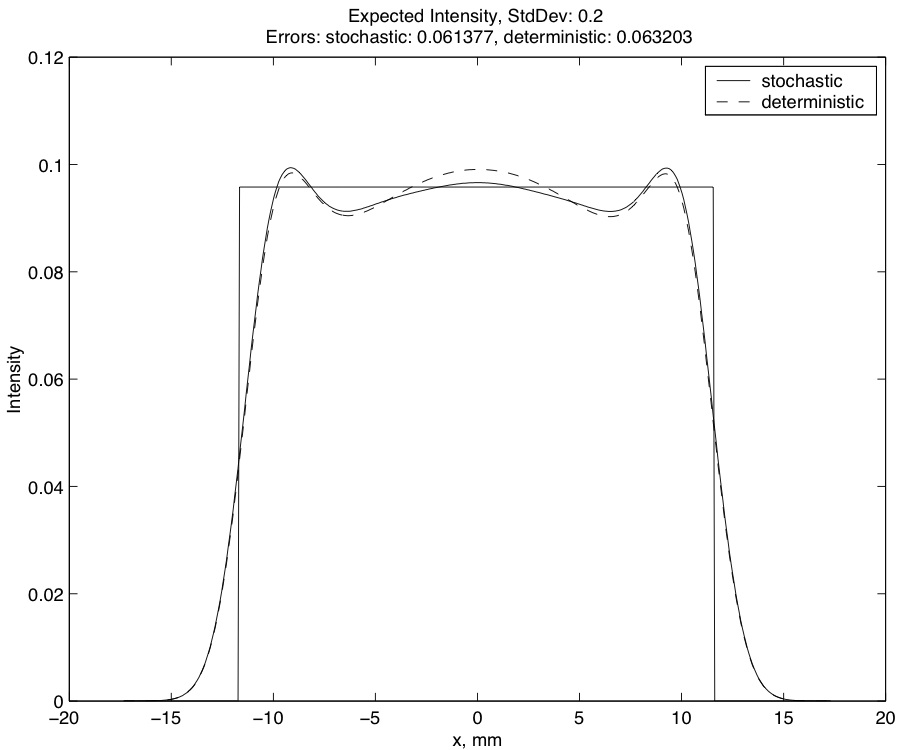 |
Robust optimal design of an optical homogenizer
operating under varying input conditions: designed a phase mask
to transform stochastically varying input (left plot) to an
approximate box-car output (right plot) using robust stochastic
optimization methods. Masters thesis project arising from internship
with 3M Corp. |
 |
Molecular beam electric resonance
spectroscopy: undergraduate summer research in experimental
physics. Improved data collection software, repaired hardware on the
apparatus, modified modeling software to incorporate faster
numerical methods. |